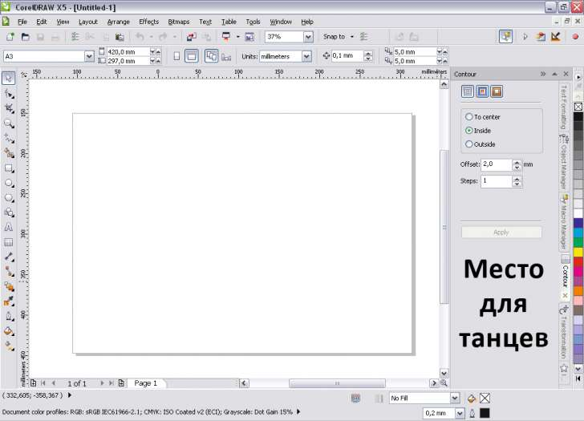
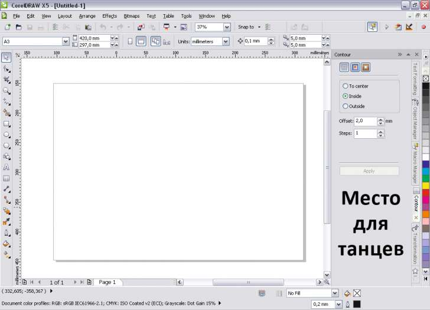

Собственно высказываемся, чего бы хотелось увидеть в CorelDRAW X6. :)
Sancho / 08.05.2010, 01:44
Только если корел не покупной, после второго сервис пака озникнут решаемые проблемы. если надо - опишу решение
И сразу в бан на недельку за нарушение правил портала (п. II.4). :)
Sinto / 13.05.2010, 17:39
Во, еще вспомнила - хочу....чтобы окно для просмотра импорируемых файлов стало побольше! :D Раза в 3-4 :)
Black / 14.05.2010, 09:16
Sinto, это зависит от системы а не от корела.
Sinto / 14.05.2010, 13:29
Sinto, это зависит от системы а не от корела.
Да знаю я, знаю...ну не ужели ничего придумать нельзя? Грустно... :(
Koolk / 14.05.2010, 18:18
Да конечно можно. Adoba же сделала возможность использовать свой тип диалоговых окон!
kuterma2 / 17.05.2010, 14:43
Sinto, это ОЧЕНЬ легко решается прогой XFilesDialog. Постоянно ей пользуюсь, чтобы окно открытия/импорта/записи и т.д. были большего размера. Крайне рекомендую.
kpars / 18.05.2010, 02:51
Заранее прошу прощения, т.к. нет времени все читать и ставить очередную версию для проверки. Появилась ли опция оверпринта для черного цвета при записи композитных постскриптов, или чтобы это было по умолчанию как у Адобов? Или на всё черное по-прежнему раставлять оверпринты врукопашную?
Black / 18.05.2010, 09:27
kpars, вообще то есть, да и на моей памяти есть давно!
kpars / 18.05.2010, 13:55
2Black Да действительно появилось, но почему-то не работает. Т.е при записи composite PS и дальнейшего дистиллирования в pdf оверпринт на черный отсутствует. Перехожу в тему по поводу косяков
D-New / 19.05.2010, 20:39
Хотелось бы следующего:
1. Чтоб при коррекции растровых изображений было превью в реальном времени. (а не тыкать всю дорогу по кнопке preview). Поэтому пользуюсь макросом Edit in photoshop (за него отдельное спасибо)
2. Чтоб двойным щелчком по контейнеру срабатывала команда Edit Contents (Будет удобно. Может, макрос такой можно написать, а? ;) )
3. Если в докере мало информации, чтоб рядом был виден еще один (ато много места пустого получается). 
Или вообще, было бы здорово, если б была организация докеров, как у палитр в адобовских продуктах. Чтоб они двойным кликом сворачивались там, группировались по темам, всякое такое....
Да знаю я, знаю...ну не ужели ничего придумать нельзя? Грустно... :(
Постоянно ей пользуюсь, чтобы окно открытия/импорта/записи и т.д. были большего размера. Крайне рекомендую.
Да действительно появилось, но почему-то не работает. Т.е при записи composite PS и дальнейшего дистиллирования в pdf оверпринт на черный отсутствует. Перехожу в тему по поводу косяков
1. Чтоб при коррекции растровых изображений было превью в реальном времени.
(а не тыкать всю дорогу по кнопке preview). Поэтому пользуюсь макросом Edit in photoshop (за него отдельное спасибо)
2. Чтоб двойным щелчком по контейнеру срабатывала команда Edit Contents
(Будет удобно. Может, макрос такой можно написать, а? ;) )
3. Если в докере мало информации, чтоб рядом был виден еще один (ато много места пустого получается).

Или вообще, было бы здорово, если б была организация докеров, как у палитр в адобовских продуктах. Чтоб они двойным кликом сворачивались там, группировались по темам, всякое такое....
Страницы